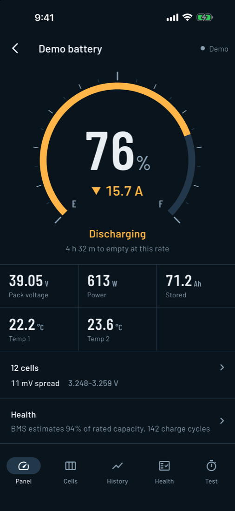
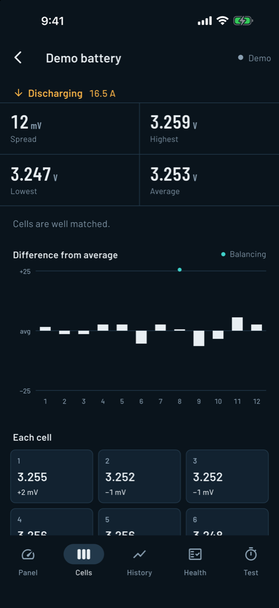
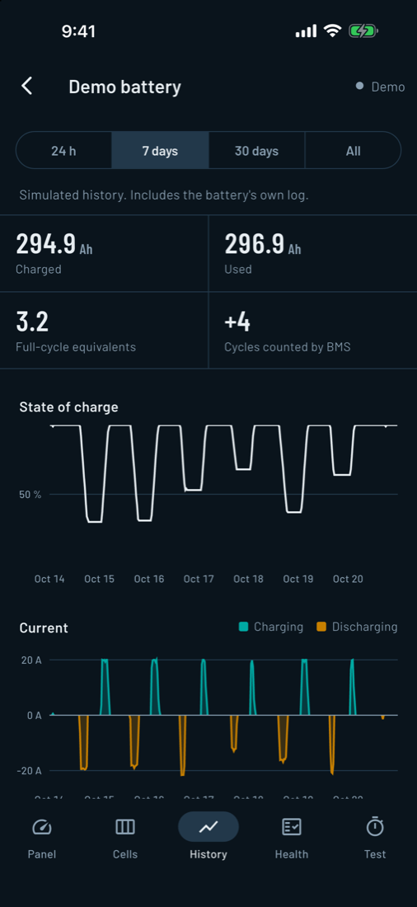

CellScope
LiFePO4 Battery Monitor
CellScope connects to your smart-BMS lithium iron phosphate battery over Bluetooth and shows what it's doing, readable at a glance even in bright sun: charge level, charge and discharge current, time to full or empty, every cell's voltage, history, and battery health.



Contact
Questions, problems or a battery you'd like supported? Email rileyporter@gmail.com. Include your battery brand and model and, if you can, a screenshot.
Supported batteries
| BMS family | Brands |
|---|---|
| JBD / Xiaoxiang | LOSSIGY, Bopga / SUPCELION, Yepai |
| ECO Battery | ECO (EB / LZH) |
| Bolt | Bolt USA |
| Daly | Daly |
| PACE | PACEEX / PbmsTools |
| Starry | Power Queen, ANT, Redodo, LiTime |
| Renogy | Renogy (BT-2) |
| JK / Jikong | JK-BMS |
| Victron | SmartLithium, SmartShunt (Instant Readout) |
Victron devices broadcast encrypted readings, so CellScope needs each device's encryption key once: in VictronConnect, open the device, then Product info → Encryption key, and paste the key. No pairing or connection is needed.
Battery not listed? On the scan screen tap "Battery not listed? Help add it" — CellScope attaches the Bluetooth details for you — or request it here. Include the brand and model.
No battery to hand? Open the demo battery on the scan screen to try every feature.
Troubleshooting
My battery doesn't appear. A battery accepts only one Bluetooth connection at a time. Close the manufacturer's app (and disconnect any other phone), then scan again. Victron devices don't connect, so this doesn't apply to them. Make sure Bluetooth access is allowed for CellScope in Settings.
History is empty. Most batteries keep no log of their own, only lifetime totals. CellScope records history on your device while it's connected, so charts fill in over time. Batteries that keep their own log (such as ECO) are imported automatically.
Health looks too high. The battery's own health figure is an estimate. For a measured value, run the capacity test on the Test tab: charge to full, then discharge with a steady load until the BMS cuts off.
Does CellScope change my battery?
CellScope only reads your battery. The one exception: on batteries with a clock, it can set the time, and only when you tap to confirm.